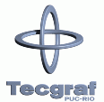

The Lua team is grateful to several individuals, donors, and institutions. We are especially grateful to Tecgraf for its continued support of Lua. We thank everyone at Tecgraf, especially the head of the group, Marcelo Gattass.
At the risk of omitting several names, we thank the following individuals for supporting Lua along the years by spreading the word about Lua, contributing ideas, suggesting improvements, and helping the community:
Thank you!
We are grateful to the following individuals and companies and several anonymous donors for their generous donations to the Lua project.
Thank you!
We are grateful to the following institutions for currently supporting Lua:
|  | Tecgraf housed the Lua project from its birth in 1993 until 2005. |

| LabLua houses the Lua project since 2005. |

| The Department of Computer Science houses LabLua, where Lua is currently developed. |
| PUC-Rio is the birthplace of Lua and is the alma mater of the Lua team. | |
| IMPA hosts LuaForge and is home to one third of the Lua team. | |
| Pepperfish hosts Lua.org since 2004 and the mailing list since 2010. |
We are grateful to the following institutions for supporting Lua in the past:

| King hosted and sponsored the Lua Workshop 2015. |

| Mail.Ru hosted and sponsored the Lua Workshop 2014. |

| Verisign hosted and sponsored the Lua Workshop 2012. |
| FINEP sponsored the translation of the reference manual into Portuguese in 2007. | |
| Océ hosted and sponsored the Lua Workshop 2006 and was a corporate sponsor. | |

| Adobe hosted and sponsored the Lua Workshop 2005 and was a corporate sponsor. |

| CNPq supported several initiatives of the Lua project in 2004 and 2005. |
| Soho One hosted this web site from 2001 to 2004. | |
| Mandriva Conectiva hosted the mailing list from 2003 to 2010. |